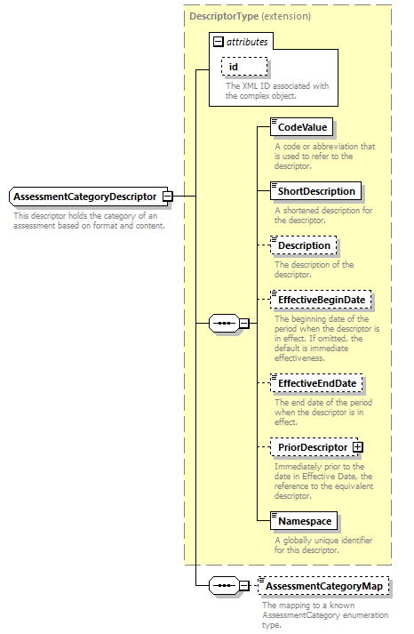
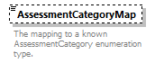

complexType
AssessmentCategoryDescriptor
element AssessmentCategoryDescriptor/AssessmentCategoryMap
| diagram |  | ||||||||||||||
| namespace | http://ed-fi.org/0210 | ||||||||||||||
| type | extension of DescriptorType | ||||||||||||||
| properties |
|
||||||||||||||
| children | CodeValue ShortDescription Description EffectiveBeginDate EffectiveEndDate PriorDescriptor Namespace AssessmentCategoryMap | ||||||||||||||
| attributes |
|
||||||||||||||
| annotation |
|
||||||||||||||
| source | <xs:complexType name="AssessmentCategoryDescriptor"> <xs:annotation> <xs:documentation>This descriptor holds the category of an assessment based on format and content.</xs:documentation> <xs:appinfo> <ann:TypeGroup>Descriptor</ann:TypeGroup> </xs:appinfo> </xs:annotation> <xs:complexContent> <xs:extension base="DescriptorType"> <xs:sequence> <xs:element name="AssessmentCategoryMap" type="AssessmentCategoryMapType" minOccurs="0"> <xs:annotation> <xs:documentation>The mapping to a known AssessmentCategory enumeration type.</xs:documentation> </xs:annotation> </xs:element> </xs:sequence> </xs:extension> </xs:complexContent> </xs:complexType> |
element AssessmentCategoryDescriptor/AssessmentCategoryMap
| diagram |  | |||||||||||||||||||||||||||||||||||||||||||||||||||||||||||||||||||||||||||||||||||||||||||||||||||||||||||||||||||||||||||||||||||||||
| namespace | http://ed-fi.org/0210 | |||||||||||||||||||||||||||||||||||||||||||||||||||||||||||||||||||||||||||||||||||||||||||||||||||||||||||||||||||||||||||||||||||||||
| type | AssessmentCategoryMapType | |||||||||||||||||||||||||||||||||||||||||||||||||||||||||||||||||||||||||||||||||||||||||||||||||||||||||||||||||||||||||||||||||||||||
| properties |
|
|||||||||||||||||||||||||||||||||||||||||||||||||||||||||||||||||||||||||||||||||||||||||||||||||||||||||||||||||||||||||||||||||||||||
| facets |
|
|||||||||||||||||||||||||||||||||||||||||||||||||||||||||||||||||||||||||||||||||||||||||||||||||||||||||||||||||||||||||||||||||||||||
| annotation |
|
|||||||||||||||||||||||||||||||||||||||||||||||||||||||||||||||||||||||||||||||||||||||||||||||||||||||||||||||||||||||||||||||||||||||
| source | <xs:element name="AssessmentCategoryMap" type="AssessmentCategoryMapType" minOccurs="0"> <xs:annotation> <xs:documentation>The mapping to a known AssessmentCategory enumeration type.</xs:documentation> </xs:annotation> </xs:element> |